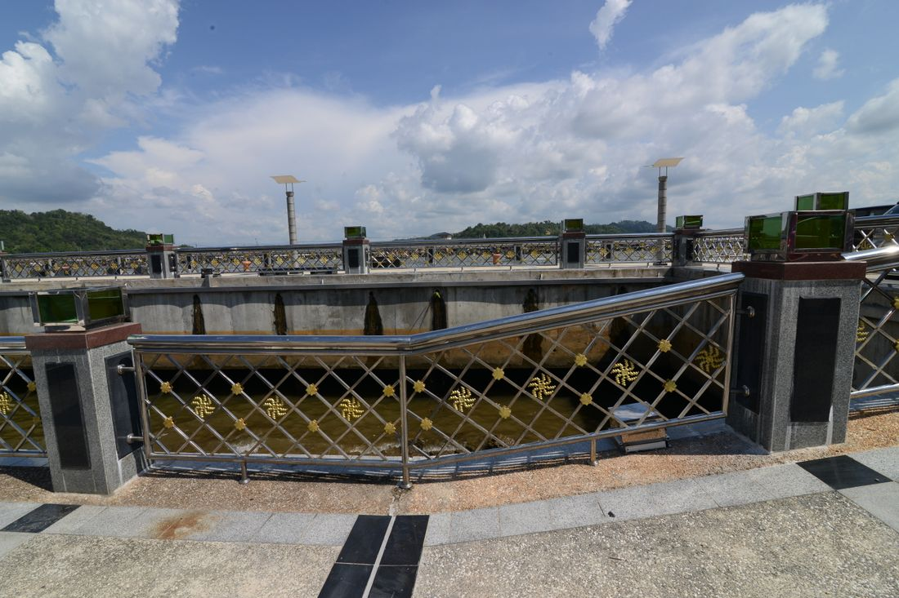

📖 5. Ünite Konu Özeti: Kültürümüzdeki Dinî Motifler


Geleneğimizde Dinin İzleri
1️⃣ Geleneğimizde Dinin İzleri
Kültür, bir toplumun maddi ve manevi değerlerinin bütünüdür. Örf ve âdetler, toplumun uzun sürede oluşturup benimsediği yazılı olmayan kurallardır. Yaygın geleneklerimiz arasında mevlit okutma, taziye ziyareti, kız isteme, asker uğurlama ve düğün vardır.
Bir bebek dünyaya geldiğinde kulağına ezan ve kamet okunarak güzel bir isim verilmesine isim koyma geleneği denir. Erkek çocuklarının belirli bir yaşta sünnet olması da toplumumuzda mevlit ve şölenlerle kutlanan, dinî-toplumsal önemi olan bir gelenektir. Ramazan ayında cami cemaatinin bir araya gelip sırayla Kur'an-ı Kerim okumasına ise mukabele denir; bu gelenek insanları Kur'an etrafında birleştirir.
Kandil geceleri (Mevlit, Regaip, Miraç, Berat), kültürümüzde dört önemli gecedir; II. Selim zamanında minarelerde kandil yakılarak kutlandığı için bu adı almıştır. Yardımlaşma gelenekleri: sadaka taşı (Osmanlı'da yaygınlaşan yardım bırakma yeri), zimem defteri (Arapça "borçlar"; veresiye borçların yazıldığı defter), vakıf (bir malı topluma özgüleme) ve vakfiye (vakfın işleyiş belgesi).
Ramazanda iki minare arasına mahya asılır; çocuklar için "tekne orucu" yapılır. Muharrem ayının onuncu gününe "aşure günü" denir; bu günde aşure tatlısı yapılıp dağıtılır. Ehlibeyt (Hz. Muhammed'in aile fertleri, "ev halkı") sevgisi; Muhammed, Fatıma, Ali, Hasan, Hüseyin gibi isimlerin yaygın kullanımıyla kültürümüzde yaşar.
🤔 Merak Ettin mi?
Kültürümüzde dört önemli kandil gecesi vardır: Regaip, Miraç, Berat ve Mevlit Kandili.
❌ Yanlış Bilinenler
❌ Bazıları mevlit, kandil gibi geleneklerin dinin zorunlu bir parçası olduğunu düşünür.
✅ Bu gelenekler dinin temel ibadetleri değil, kültürümüzde zamanla oluşmuş, sevgi ve dayanışmayı güçlendiren güzel adetlerdir.
🗺️ Kavram HaritasıKavram ilişkisi
Bu konunun alt başlıkları ve aralarındaki ilişki
🏠 Günlük Hayattan
Bayramda büyükleri ziyaret etmek, dinin gelenek hâline gelmiş en canlı örneğidir.
🤔 Sıra SendeDüşün ve cevapla
Ailende sürdürülen dinî bir gelenek var mı? Anlat.
📌 Aklında Kalsın
- Din, kültürün içine yerleşerek gelenek hâline gelir.
- Bayram ve kandiller toplumu bir araya getirir.

Edebiyatımızda Dinin İzleri
2️⃣ Edebiyatımızda Dinin İzleri
Edebiyat, olay, duygu ve düşüncelerin sözlü ya da yazılı ifadesidir. Din, yeni edebî türlerin ortaya çıkmasını sağlamıştır: tevhit (Allah'ın varlığı ve birliğini anlatan eser), münacat (Allah'a dua amacıyla yazılan şiir), naat (Hz. Peygamber'i öven şiir) ve mevlit (Hz. Peygamber'in doğumunu anlatan eser — en meşhuru Süleyman Çelebi'nin "Vesiletü'n-Necat"ıdır).
Naatın ilk örneklerini Yusuf Has Hacip, Hoca Ahmet Yesevi, Hacı Bektaş Veli, Yunus Emre yazmıştır. Önemli eserler: Hacı Bektaş Veli'nin "Makalat"ı, Hoca Ahmet Yesevi'nin "Divan-ı Hikmet"i, Yunus Emre'nin "Divan"ı, Mevlana'nın "Mesnevi"si. Sözlü edebiyatta da (atasözü, deyim, ninni, ağıt) dinin izleri görülür.
🌍 Gerçek Hayattan Bir Örnek
Bir ailenin mevlit kandilinde komşularına aşure ikram etmesi, kültürümüzdeki paylaşma geleneğinin canlı bir örneğidir.
💭 Düşün ve Cevapla
Ailende hangi dinî/kültürel gelenekler yaşatılıyor? Bu gelenekler neden önemli?
🏠 Günlük Hayattan
“Komşusu açken tok yatan bizden değildir” ölçüsü, atasözlerimize kadar sinmiştir.
📌 Aklında Kalsın
- Edebiyatımızda dinî temalar çok yaygındır.
- Atasözü ve deyimler bu değerleri kısa yoldan aktarır.
Musikimizde Dinin İzleri
3️⃣ Musikimizde Dinin İzleri
Musiki, kulağa hoş gelen sesler dizisidir. Ezan, namaz vakitlerinin geldiğini duyuran çağrıdır; ilk kez Bilal Habeşi tarafından okunmuştur. Kamet, farz namazlardan önce ezana "Kad kâmeti's salâh" ekleyerek okunmasıdır. Sela, önemli gün/geceleri veya cenaze namazını haber vermek için okunan duadır.
Salavat, Hz. Peygamber'e selam ve dua etmek; ilahi, Allah'ı övme ve dua amacıyla bestelenen şiirlerdir. Tekbir, Buhurizade Mustafa Itri Efendi tarafından bestelenmiştir. Güzel sesiyle mevlit okuyan kişiye mevlithan denir. İslam, Türk sanat ve halk müziğini de etkilemiştir (Allah, Hak, Yaradan, cennet, kader gibi ifadeler).
🔍 Derinlemesine Düşünelim
Bu ünitede öğrendiklerini derinlemesine değerlendirmek için kendine şu soruları sor:
- Bu bilgi benim hayatımı nasıl etkiler?
- Bu kavram neden önemlidir?
- Günlük yaşamda bunun karşılığı nedir?
⚖️ Ahlaki İkilem — Sen Olsaydın Ne Yapardın?
Bir arkadaşın, ilahilerin ya da mevlitlerin "eski moda" olduğunu, bunlarla ilgilenmenin gereksiz olduğunu söylüyor. Bu kültürel ve dinî mirasın önemini ona nasıl anlatırdın?
👨👩👧 Ailemle Yapıyorum
Ailenle birlikte bir sonraki kandil gecesinde küçük bir aile sohbeti düzenleyip Hz. Peygamber'in hayatından bir bölüm anlatın.
✅ Kendimi Değerlendiriyorum
🌍 Hayatta Dene
Bugünün görevi: Bugün ailende veya çevrende yaşatılan bir dinî-kültürel geleneği (mevlit, kandil, bayramlaşma gibi) sor, öğren ve kısaca not al.
🏠 Günlük Hayattan
İlahiler ve ezan makamları, musikimizin dinle iç içe geçtiğini gösterir.
📌 Aklında Kalsın
- Musikimizde ilahi, ezan ve mevlit önemli yer tutar.
- Bu eserler dinî duyguyu sesle anlatır.
🖥️ Ünite Sunumu
6. SINIF — 5. ÜNİTE
Kültürümüzdeki Dinî Motifler
Din Kültürü ve Ahlak Bilgisi
Ayşe Yazıcı
🎯 Bu Ünitede Neler Öğreneceğiz?
- Geleneğimizde Dinin İzleri
- Edebiyatımızda Dinin İzleri
- Musikimizde Dinin İzleri
📌 Geleneğimizde Dinin İzleri (1/3)
- Kültür, bir toplumun maddi ve manevi değerlerinin bütünüdür.
- Örf ve âdetler, toplumun uzun sürede oluşturup benimsediği yazılı olmayan kurallardır.
- Yaygın geleneklerimiz arasında mevlit okutma, taziye ziyareti, kız isteme, asker uğurlama ve düğün vardır.
- Kandil geceleri (Mevlit, Regaip, Miraç, Berat), kültürümüzde dört önemli gecedir; II.
📌 Geleneğimizde Dinin İzleri (2/3)
- Selim zamanında minarelerde kandil yakılarak kutlandığı için bu adı almıştır.
- Yardımlaşma gelenekleri: sadaka taşı (Osmanlı'da yaygınlaşan yardım bırakma yeri), zimem defteri (Arapça "borçlar"; veresiye borçların yazıldığı defter), vakıf (bir malı topluma özgüleme) ve vakfiye (vakfın işleyiş…
- Ramazanda iki minare arasına mahya asılır; çocuklar için "tekne orucu" yapılır.
- Muharrem ayının onuncu gününe "aşure günü" denir; bu günde aşure tatlısı yapılıp dağıtılır. Ehlibeyt (Hz.
🤔 MERAK ETTİN Mİ?
Kültürümüzde dört önemli kandil gecesi vardır: Regaip, Miraç, Berat ve Mevlit Kandili.
📌 Geleneğimizde Dinin İzleri (3/3)
- Muhammed'in aile fertleri, "ev halkı") sevgisi; Muhammed, Fatıma, Ali, Hasan, Hüseyin gibi isimlerin yaygın kullanımıyla kültürümüzde yaşar.
❌ YANLIŞ BİLİNENLER
❌ Bazıları mevlit, kandil gibi geleneklerin dinin zorunlu bir parçası olduğunu düşünür.
✅ Bu gelenekler dinin temel ibadetleri değil, kültürümüzde zamanla oluşmuş, sevgi ve dayanışmayı güçlendiren güzel adetlerdir.
📌 Edebiyatımızda Dinin İzleri (1/2)
- Edebiyat, olay, duygu ve düşüncelerin sözlü ya da yazılı ifadesidir.
- Din, yeni edebî türlerin ortaya çıkmasını sağlamıştır: tevhit (Allah'ın varlığı ve birliğini anlatan eser), münacat (Allah'a dua amacıyla yazılan şiir), naat (Hz.
- Peygamber'i öven şiir) ve mevlit (Hz. Peygamber'in doğumunu anlatan eser — en meşhuru Süleyman Çelebi'nin "Vesiletü'n-Necat"ıdır).
🌍 GERÇEK HAYATTAN BİR ÖRNEK
Bir ailenin mevlit kandilinde komşularına aşure ikram etmesi, kültürümüzdeki paylaşma geleneğinin canlı bir örneğidir.
📌 Edebiyatımızda Dinin İzleri (2/2)
- Naatın ilk örneklerini Yusuf Has Hacip, Hoca Ahmet Yesevi, Hacı Bektaş Veli, Yunus Emre yazmıştır.
- Önemli eserler: Hacı Bektaş Veli'nin "Makalat"ı, Hoca Ahmet Yesevi'nin "Divan-ı Hikmet"i, Yunus Emre'nin "Divan"ı, Mevlana'nın "Mesnevi"si.
- Sözlü edebiyatta da (atasözü, deyim, ninni, ağıt) dinin izleri görülür.
💭 DÜŞÜN VE CEVAPLA
Ailende hangi dinî/kültürel gelenekler yaşatılıyor? Bu gelenekler neden önemli?
📌 Musikimizde Dinin İzleri (1/3)
- Musiki, kulağa hoş gelen sesler dizisidir.
- Ezan, namaz vakitlerinin geldiğini duyuran çağrıdır; ilk kez Bilal Habeşi tarafından okunmuştur.
- Kamet, farz namazlardan önce ezana "Kad kâmeti's salâh" ekleyerek okunmasıdır.
👨👩👧 AİLEMLE YAPIYORUM
Ailenle birlikte bir sonraki kandil gecesinde küçük bir aile sohbeti düzenleyip Hz. Peygamber'in hayatından bir bölüm anlatın.
📌 Musikimizde Dinin İzleri (2/3)
- Sela, önemli gün/geceleri veya cenaze namazını haber vermek için okunan duadır.
- Salavat, Hz. Peygamber'e selam ve dua etmek; ilahi, Allah'ı övme ve dua amacıyla bestelenen şiirlerdir.
- Tekbir, Buhurizade Mustafa Itri Efendi tarafından bestelenmiştir. Güzel sesiyle mevlit okuyan kişiye mevlithan denir.
✅ KENDİMİ DEĞERLENDİRİYORUM
- ☐ Dört kandil gecesini sayabilirim.
- ☐ Mevlit kavramının anlamını açıklayabilirim.
- ☐ Kültürümüzdeki dinî motiflere örnek verebilirim.
- ☐ Ailemle birlikte kültürel geleneklerimizi yaşatmaya özen gösteriyorum.
📌 Musikimizde Dinin İzleri (3/3)
- İslam, Türk sanat ve halk müziğini de etkilemiştir (Allah, Hak, Yaradan, cennet, kader gibi ifadeler).
🔑 Önemli Kavramlar (1/2)
🔑 Önemli Kavramlar (2/2)
📖 AYETLERLE DÜŞÜNELİM
"Sadakaları açık olarak verirseniz bu ne güzel!.."
— Bakara suresi, 271. ayet
📖 AYETLERLE DÜŞÜNELİM
"Allah, sizden kiri gidermek ve sizi tertemiz yapmak istiyor, ey Ehl-i Beyt!"
— Ahzab suresi, 33. ayet
🎬 KONUYLA İLGİLİ VİDEO
Ali ve Ayşe - Bir Mevlid Kandili Hatırası
🔍 DERİNLEMESİNE DÜŞÜNELİM
- Bu bilgi benim hayatımı nasıl etkiler?
- Bu kavram neden önemlidir?
- Günlük yaşamda bunun karşılığı nedir?
📝 Ünite Özeti
- Geleneğimizde Dinin İzleri
- Edebiyatımızda Dinin İzleri
- Musikimizde Dinin İzleri
Dinlediğiniz İçin Teşekkürler
Başarılar dilerim.
Ayşe Yazıcı — Din Kültürü ve Ahlak Bilgisi Öğretmeni